賢王歐西里斯被嫉妒的弟弟賽特設局：宴會上拿出華美棺木說「誰躺進去剛好就送誰」，歐西里斯一躺，賽特立刻釘棺丟進尼羅河，再把屍體剁成 14 塊撒遍埃及。妻子伊西斯走遍全國拼回丈夫，用魔法讓他短暫復活並懷了荷魯斯。歐西里斯成為冥界之王；荷魯斯長大後與叔叔大戰為父報仇，戰鬥中失去一眼——復原後那隻眼成了護身符「荷魯斯之眼」（紀念品店到處都是，講完再帶大家去買）。
這故事解釋了一切：法老活著是荷魯斯、死了變歐西里斯；埃及人為何相信復活、為何做木乃伊。
ITINERARY
每日行程
固定節奏：早出發 → 中午回飯店午休 → 傍晚再出門。上埃及正午近 40°C，午休是玩埃及的鐵律。
Day 0
9/25（五）出發
✈️ 機上- TPE → SIN（新加坡轉機 8.5 小時，可出境逛星耀樟宜或買貴賓室休息）→ AUH。
- 上機前完成：下載開羅/路克索/亞斯文離線地圖、Uber App、換好小面額美金（$1、$5 多換些，簽證費與小費用）。
Day 1
9/26（六）抵達開羅・休整日
🏨 Soul Pyramids View- 05:25 抵達開羅機場。入關前於銀行櫃檯買落地簽貼紙：每人 25 美元現金（護照效期需 6 個月以上）。
- 機場辦 SIM（Vodafone/Orange 觀光方案約 USD 10–15），或事先買好 eSIM 落地即上網。
- 07:00 請飯店安排接機（約 USD 20–25，車程 50 分鐘）。寄放行李、補眠 2–3 小時，今天不排重行程。
- 15:00 後：屋頂露台看金字塔喝茶；晚上可從屋頂免費看金字塔聲光秀（Sound & Light Show）。早睡調時差。
- 💰 本日 4 人估算：約 TWD 7,000（落地簽 $100＝3,200＋SIM/eSIM 1,500＋接機 800＋簡單兩餐 1,500）

Day 2
9/27（日）吉薩金字塔群 Giza Pyramids＋下午 GEM
🏨 Soul Pyramids View- 07:30 開門即入場（涼快、人少、光線好）。從飯店步行 5–10 分鐘到 Sphinx Gate；園區大，建議包車進園代步。
- 順序：大金字塔（Great Pyramid of Khufu，內部自選，通道低矮陡峭，量力而為）→ 卡夫拉（Khafre）、孟卡拉（Menkaure）→ 全景觀景台（Panoramic Point，三塔同框＋自選駱駝）→ 人面獅身像（Great Sphinx）。
- 12:00 午餐 9 Pyramids Lounge（景觀第一，需預約）。
- 14:00 GEM 大埃及博物館（Grand Egyptian Museum）（Uber 15 分鐘；⚠️ 門票只能線上買 tickets.gem.eg，選下午時段，現場不售票）：大階梯 → 圖坦卡門（Tutankhamun）全集 → 拉美西斯巨像，約 3–4 小時，館內冷氣足、有電梯。
- 晚餐：Khufu's（金字塔景觀的精緻埃及菜，需預約；就在吉薩園區旁，回飯店近）。
- 門票：園區 EGP 700／大金字塔內部另購 EGP 1,500／孟卡拉內部 EGP 280（只收信用卡，完整價目表見「交通實用」）。
- 💰 本日 4 人估算：約 TWD 16,300（門票 700+1,450＝2,150EGP×4≈5,600＋午餐 3,200＋Khufu's 晚餐 6,500＋園區代步/Uber 1,000）；自選大金字塔內部 4 人＋3,900、孟卡拉內部＋730
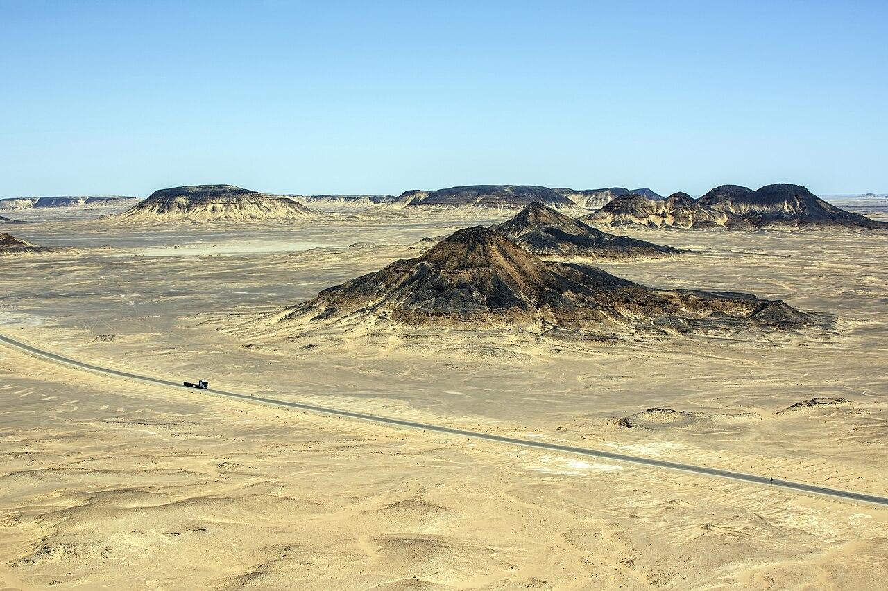
Day 3
9/28（一）黑白沙漠 Black & White Desert Day 1 🏜️
🏕️ B&W Sahara Sky Camp（已詢價 TWD 5,449）- 07:00 營地/旅行社到吉薩飯店接（大行李寄放 Soul Pyramids View，只帶一晚過夜包）。
- 車程約 4 小時（370 km）到巴哈利亞綠洲（Bahariya Oasis），綠洲午餐。
- 下午換四輪傳動吉普：黑沙漠（Black Desert）火山岩黑丘 → 水晶山（Crystal Mountain） → 阿加巴特山谷（Agabat Valley） → 白沙漠國家公園（White Desert National Park）：蘑菇岩、香菇雞岩間看日落。
- 夜宿 B&W Sahara Sky Camp（豪華露營：帳篷房有床、獨立衛浴；晚餐營地供應）。
- 重頭戲：沙漠星空（無光害銀河）＋夜訪的沙漠小狐狸。夜間約 15–20°C，帶薄外套。
- 💰 本日 4 人估算：約 TWD 9,000（開羅接送＋吉普＋門票＋餐的套裝行程費，住宿另計；若營地套裝已含接送與行程則此項大幅下降——訂購時確認）
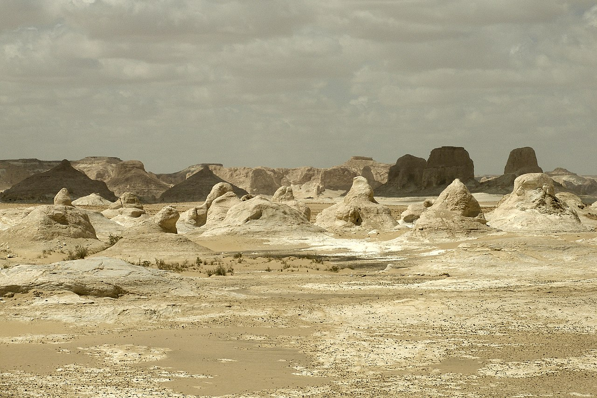
Day 4
9/29（二）黑白沙漠 Day 2 → 回開羅市區
🏨 Eileen Hotel Cairo（已詢價 TWD 4,740/2 晚）- 日出時分白沙漠（White Desert）最美（粉金色），早起的人賺到。
- 早餐後回程：巴哈利亞綠洲（可泡溫泉/看鹽湖，視套裝）→ 綠洲午餐 → 車程 4 小時回開羅。
- 回程順路回吉薩 Soul Pyramids View 取寄放行李 → 約 17:00–18:00 入住開羅市區 Eileen Hotel（9/29–30 兩晚）。巴哈利亞公路從西南邊進開羅、先經吉薩再過河進市區，是順路的；訂沙漠套裝時先確認回程可送市區飯店。
- 💰 本日 4 人估算：約 TWD 2,300（白天餐食含在沙漠套裝；開羅晚餐 2,000＋Uber 300）
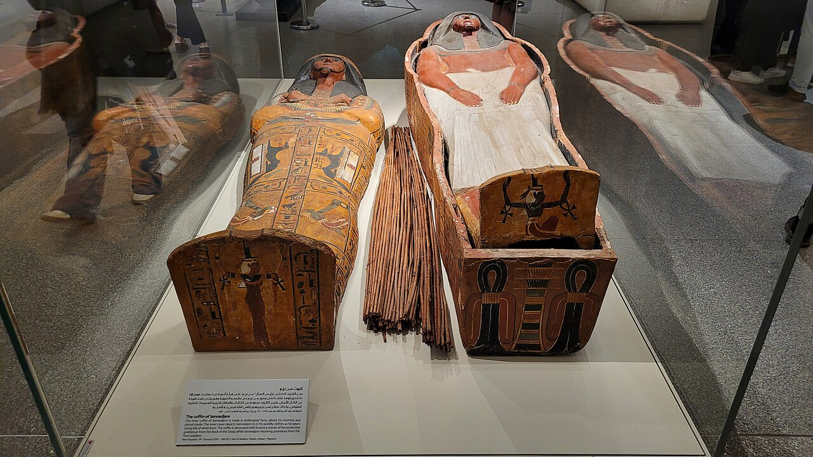
Day 5
9/30（三）NMEC＋晚上可汗卡利利 Khan el-Khalili
🏨 Eileen Hotel Cairo- 09:00 埃及文明博物館 NMEC（National Museum of Egyptian Civilization）（市區出發 Uber 約 20 分鐘，老開羅 Fustat）：鎮館之寶皇家木乃伊廳（Royal Mummies Hall）——拉美西斯二世（Ramesses II）、塞提一世（Seti I）、哈特謝普蘇特（Hatshepsut）等 20 具法老本人。約 2–2.5 小時（門票 EGP 550）。
- 出館後可順訪隔壁科普特老開羅（Coptic Cairo）（懸空教堂 Hanging Church，30–60 分鐘，自選）。午餐後回飯店午休。
- 傍晚：可汗卡利利市集（Khan el-Khalili）（市區出發車程約 15 分鐘）＋百年咖啡館 El Fishawy 薄荷茶，晚餐 Naguib Mahfouz。
- 回飯店打包（明天進阿布辛貝過夜，遊輪行李一起帶走）。
- 💰 本日 4 人估算：約 TWD 6,100（NMEC 門票 550EGP×4≈1,430＋Uber 全日 800＋兩餐 3,900）
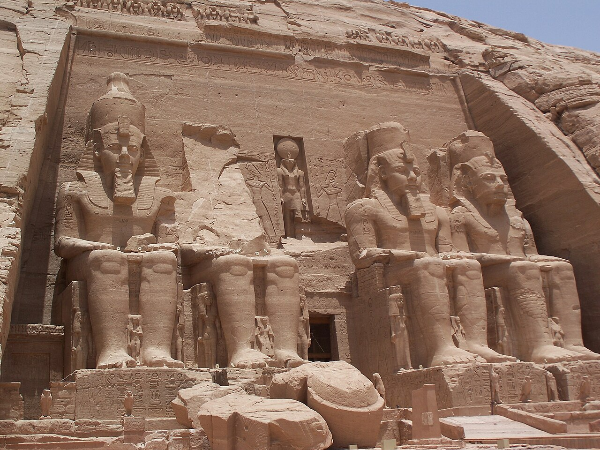
Day 6
10/1（四）飛亞斯文 Aswan → 阿布辛貝 Abu Simbel 過夜 🌅
🏨 Tuya Abu Simbel Hotel（已詢價 TWD 7,638）- 訂最早班 EgyptAir CAI → ASW（愈早愈好，例如 06:00–08:00 起飛班次；未訂）。
- 落地後包車直奔阿布辛貝（車程 3.5 小時，包車兩日含隔天回程約 USD 100–140/車，事先請旅行社或飯店安排）。若班機早到，途中可快閃未完成的方尖碑（Unfinished Obelisk）（30 分鐘）。
- 約 14:00 抵達，入住 Tuya Abu Simbel Hotel。
- 15:30–18:00 悠閒參觀大小神殿（門票 EGP 820；日行團 13:00 前就撤了，下午幾乎包場）。
- 19:00 聲光秀（Sound & Light Show）（另購 EGP 960；投影在神殿立面上講拉美西斯的故事，先跟旅館確認當晚場次）。
- 過夜版優勢：不用凌晨 3 點起床、神殿看兩次、包場感受。
- 💰 本日 4 人估算：約 TWD 25,200（CAI→ASW 機票 $110×4≈14,100＋兩日包車 $120≈3,840＋門票 820EGP×4≈2,130＋聲光秀 960EGP×4≈2,500＋餐 2,600）
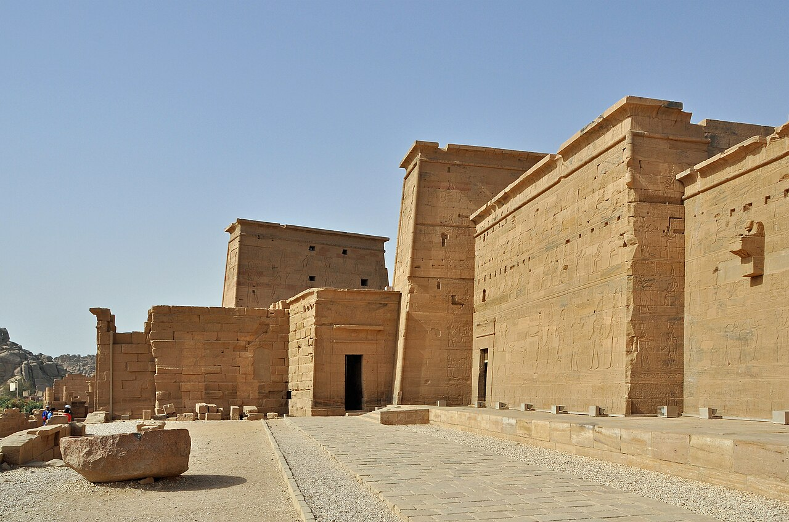
Day 7
10/2（五）阿布辛貝清晨 → 回亞斯文登船
🚢 MS Chateau Lafayette- 想再看一次的人：06:00 開門再進神殿（清晨光線直射立面最金黃，日行團 8 點後才到）。
- 07:30 出發回亞斯文（3.5h）→ 11:00 抵達碼頭。
- 12:00 登上 MS Chateau Lafayette，13:00 船上午餐。14:00 隨船參觀費萊神殿（Philae Temple）＋亞斯文高壩（Aswan High Dam）。
- 晚上努比亞歌舞秀，夜泊亞斯文。登船時確認：岸上觀光、門票、英文導遊是否含在船費內。
- 💰 本日 4 人估算：約 TWD 2,700（費萊＋高壩門票 750EGP×4≈1,950＋費萊汽船 400＋雜支 300；若船費已含門票則更省）；自選清晨二進阿布辛貝 4 人＋2,130
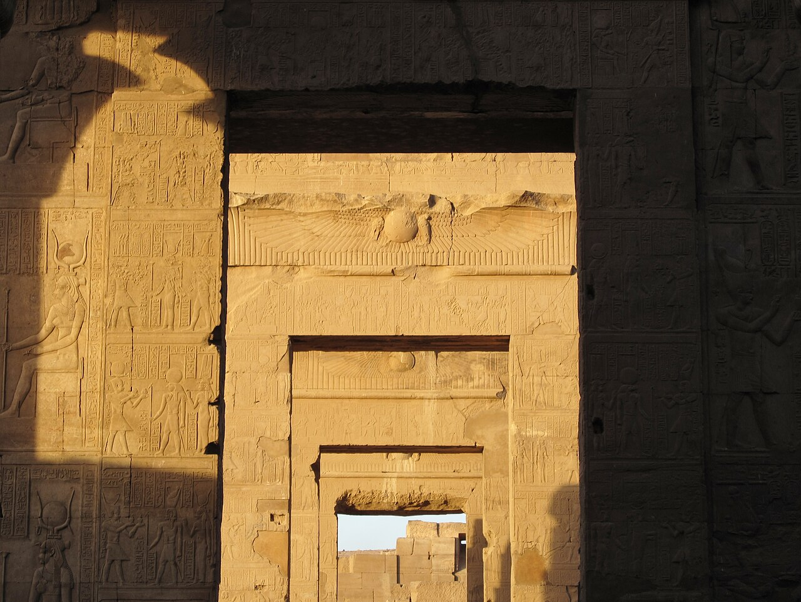
Day 8
10/3（六）遊輪：孔翁波＋艾德夫
🚢 MS Chateau Lafayette- 上午 孔翁波雙神殿（Kom Ombo Temple）（鱷魚神＋鷹神，附鱷魚木乃伊博物館）→ 船上午餐 → 下午 艾德夫荷魯斯神殿（Temple of Horus at Edfu）（碼頭搭馬車前往，先確認費用是否含在船費）。
- 傍晚甲板下午茶，看兩岸五千年不變的農村風景。
- 💰 本日 4 人估算：約 TWD 3,300（兩殿門票 1,000EGP×4≈2,600＋艾德夫馬車 650；若船費已含門票則更省）
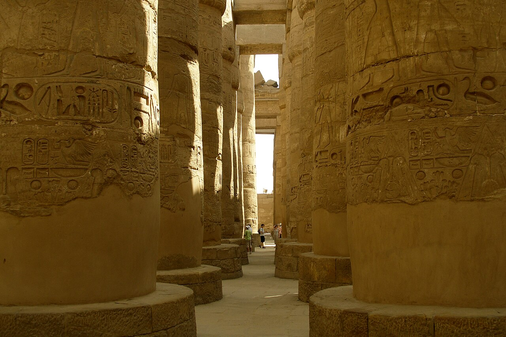
Day 9
10/4（日）艾斯納船閘 → 路克索
🚢 MS Chateau Lafayette- 上午到甲板看船過艾斯納船閘（Esna Lock）（船搭電梯降 8 公尺＋小販高空拋物賣長袍，很精彩）。
- 下午抵路克索（Luxor），隨船參觀卡納克神殿（Karnak Temple）。夜泊路克索。
- 💰 本日 4 人估算：約 TWD 1,600（卡納克門票 600EGP×4；若船費已含則免）
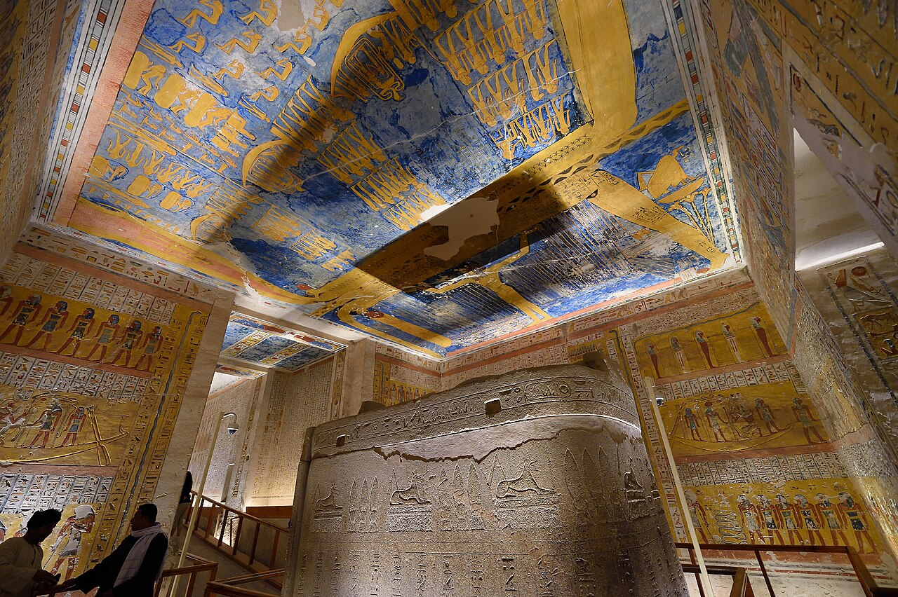
Day 10
10/5（一）下船・路克索西岸
🏨 Steigenberger Achti- 08:00 下船後直接包車西岸半日（約 USD 40–50）：帝王谷（Valley of the Kings，EGP 750 含 3 墓；加購 KV9 +220 必看）→ 哈特謝普蘇特女王神殿（Temple of Hatshepsut，EGP 440）→ 曼儂巨像（Colossi of Memnon，免費）。
- 13:00 入住 Steigenberger Achti，下午泳池畔躲太陽；傍晚河畔夕陽或搭 Felucca 風帆船。
- 💰 本日 4 人估算：約 TWD 10,700（西岸門票 1,410EGP×4≈3,670＋包車 1,440＋遊輪小費 $8/人/晚×3 晚≈3,100＋Felucca 350＋晚餐 2,000）
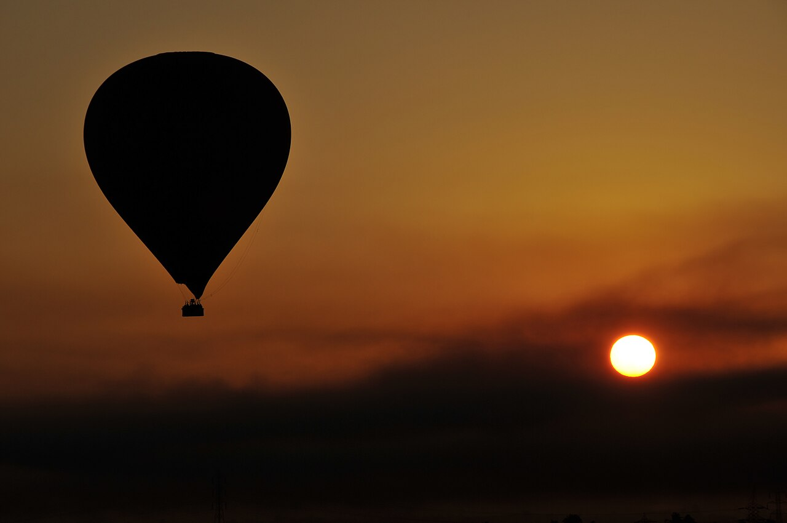
Day 11
10/6（二）熱氣球＋路克索神殿夜遊
🏨 Steigenberger Achti- 04:30 熱氣球（Hot Air Balloon）（自選強推，約 USD 60–100/人）：日出飛越帝王谷。不參加者睡飽。
- 下午：路克索博物館（Luxor Museum，冷氣好、小而精）或補逛卡納克。
- 日落後路克索神殿（Luxor Temple）夜遊——全埃及打燈最美的神殿。晚餐推薦老宅餐廳 Sofra。
- 💰 本日 4 人估算：約 TWD 6,200（路克索博物館 400EGP×4≈1,040＋路克索神殿 500EGP×4≈1,300＋兩餐 3,300＋Uber 500）；自選熱氣球 $85×4≈＋10,900
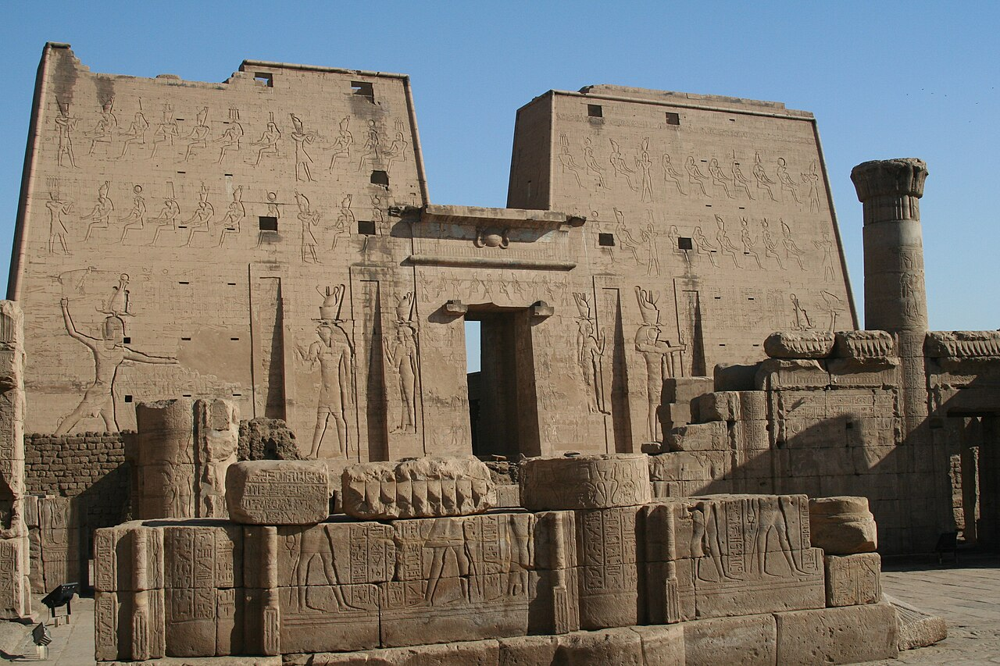
Day 12
10/7（三）路克索 → 丹德拉神廟 Dendera → 紅海
🏖️ 紅海度假村（未訂）- 08:00 包車北上 60 km（1.5h）→ 09:30–11:30 丹德拉神廟（Dendera Temple of Hathor）：全埃及保存最完整的神殿，可上頂樓、下地下室。必看：星空天花板、地下密室「電燈泡」浮雕（加購 EGP 100）、後牆埃及豔后母子浮雕。門票 EGP 300。
- 12:00 簡餐後經 Safaga 紅海公路南下（4h）→ 16:30 抵洪加達（Hurghada）入住。全日包車約 USD 100–130。
- 住宿推薦（全包式）：Steigenberger Al Dau Beach（潛店 Ilios 在飯店內——首選）／Jaz Aquamarine・Sunrise Royal Makadi（Makadi Bay 家庭友善）／Baron Palace Sahl Hasheesh（高級安靜）。想拚儒艮則考慮 Marsa Alam 的 Malikia Resort Abu Dabbab（見下方紅海導覽）。
- 💰 本日 4 人估算：約 TWD 5,800（包車 3,700＋門票 (300+100)EGP×4≈1,040＋午餐 800＋雜 300）
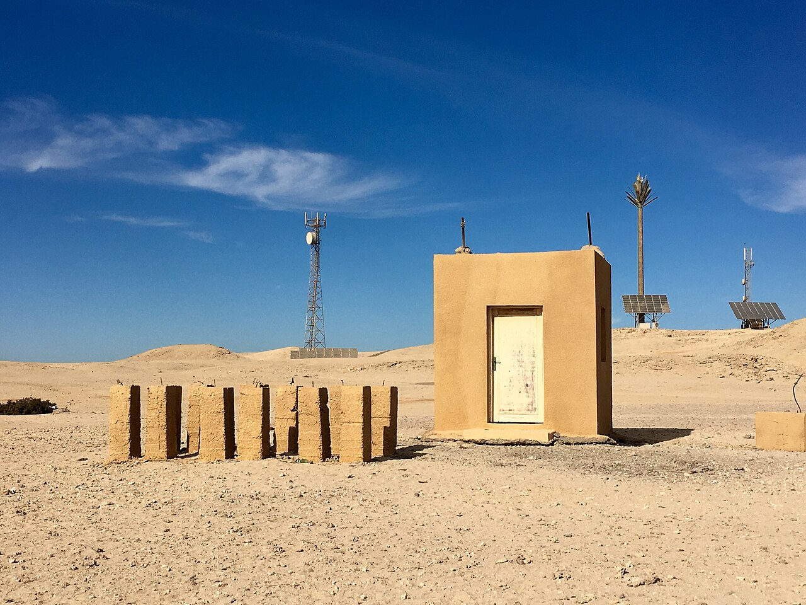
Day 13–14
10/8–10/9（四–五）紅海度假
🏖️ 紅海度假村- 10/8 潛水日（二選一）：A・吉夫頓島 Giftun——3 人出海船潛（有照 2 潛含午餐約 €60–80/人；無照 DSD 約 €70–90/人），第 4 人同船浮潛，船程近最輕鬆；B・Abu Dabbab 儒艮灣一日——05:00 包車南下 3h 到 Marsa Alam 的海草灣，3 人岸潛、第 4 人浮潛看海龜（幾乎保證）、搏儒艮 Dugong（不保證），車費 4 人約 $150–200。
- ⚠️ 潛水只能排 10/8：多次潛水後需間隔 18–24 小時才能搭機（減壓病風險），10/10 一早要趕機——10/9 只能浮潛（浮潛不受限）。
- 推薦潛店：Ilios Dive Club（PADI 五星，就在 Steigenberger Al Dau 飯店內，30 年老店）／Emperor Divers（紅海連鎖大店，Hilton Plaza 內，恆溫泳池可免費試潛）。出發前 email 預約船位，有照者帶證照卡。
- 10/9 水面休息日：沙灘、SPA、玻璃底船（不下水也能看珊瑚）。傍晚逛 Hurghada Marina。晚上打包、確認返程。
- 💰 兩日 4 人估算：約 TWD 8,800（3 人潛水 ≈6,700＋1 人浮潛船 800＋小費雜支 1,300；餐飲含在全包式房價）
Day 15–16
10/10–10/11 返程
✈️ 機上- 方案 A・國內線：10/10 最早班 HRG → CAI（未訂，06:30–08:00 起飛，飛 1h；需提領行李、重新報到國際線）。💰 4 人約 TWD 12,300（機票 11,500＋餐 800）。
- 方案 B・包車直達開羅機場：05:30 出發，紅海公路約 460 km、5–5.5 小時（中途休息一次），11:00–11:30 直達 CAI 國際航廈門口。💰 4 人約 TWD 5,500（整車 $120–160≈4,500＋簡餐 1,000），省約 6,800。行李不搬、不怕國內線延誤；代價是早起＋長途車。前一晚跟度假村確認車行、指定新車廂型車。
- 另一備案：10/9 傍晚先回開羅住機場旁 Le Méridien（空橋直達航廈），10/10 最從容，但多一晚房費、犧牲最後半天紅海。
- 15:00 CAI → AUH → SIN → 10/11 18:35 抵台北 🇹🇼